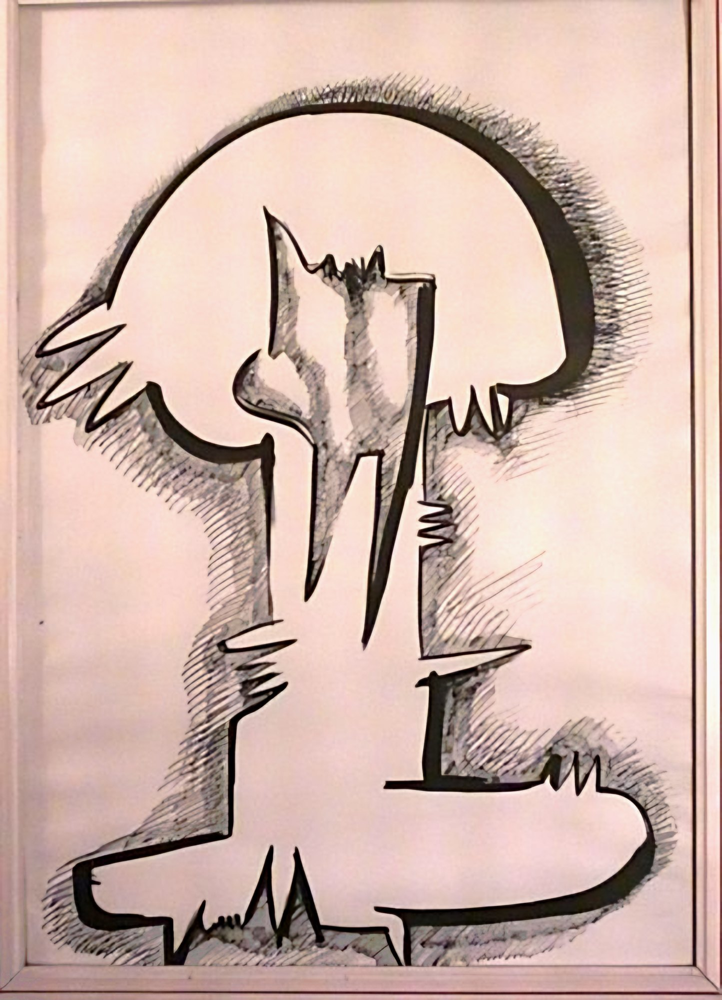

Sfondo rimosso, nitidezza e colore migliorati con strumenti di IA. Nessuna parte dell'opera è stata generata.Background removed, sharpness and colour improved with AI tools. No part of the work was generated.
← Tutte le opereAll works
UR 027
EsplosioneEsplosione
inchiostro di china, 1969Indian ink, 1969
- CatalogoCatalogue
- UR 027
- AnnoYear
- 1969
- TecnicaMedium
- inchiostro di chinaIndian ink
- TipoType
- pittura / incisionepainting / print
- DimensioniDimensions
- da completareto be completed
- CollocazioneLocation
- da completareto be completed
- VisteViews
- 1